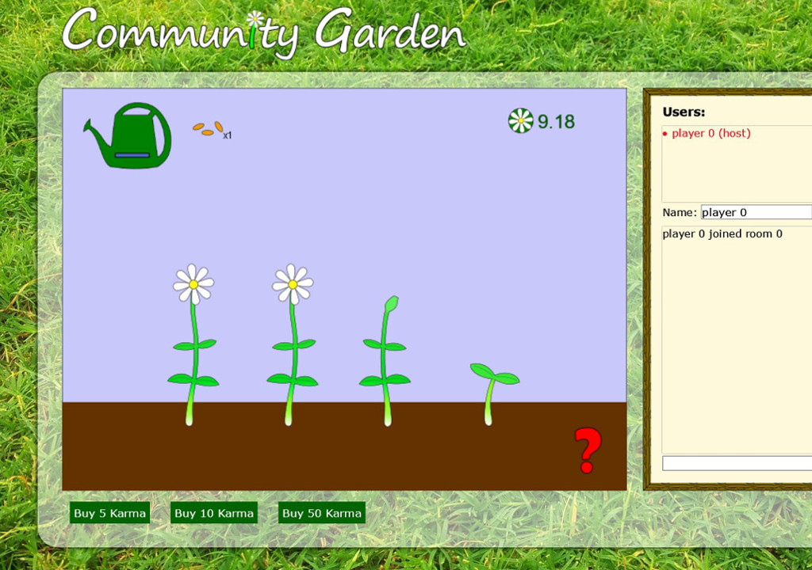

Group size: Solo
Dates: Spring 2017 - Ongoing
Role: Game mechanics, art, server
Summary: A cooperative online gardening game. Users can plant seeds,
which can be watered by any user in the room. Watering plants makes them grow over time
and also gives users "Karma" which is used as a currency. In a final version of the game
Karma would also be purchasable through microtransactions, represented here by the buttons
at the bottom.
Link to Github